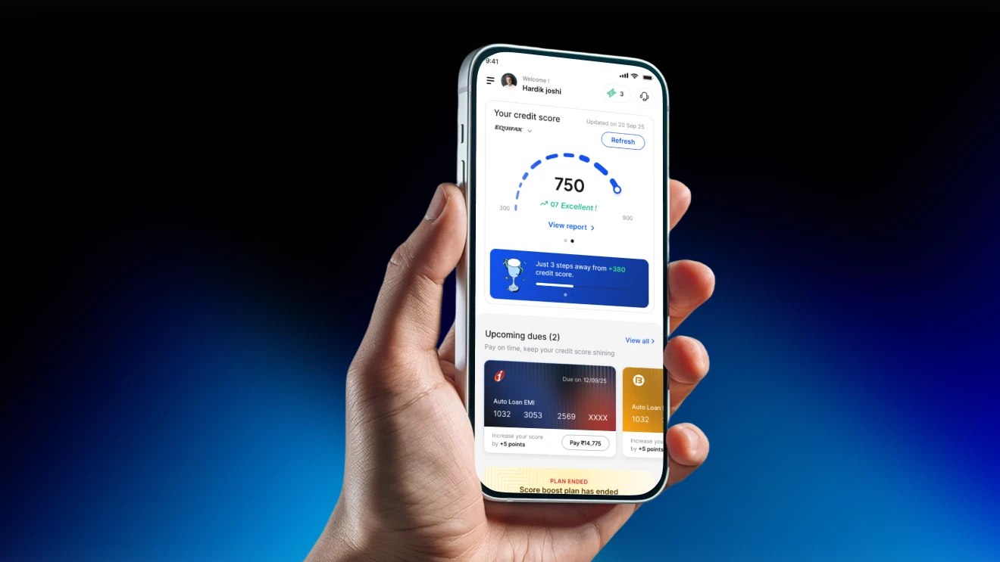

Simplifying Credit Intelligence with AI Powered Insights & Personalisation
ScoreUp is a smart financial wellness platform designed to help users monitor, improve, and manage their credit health through AI-driven insights, personalized recommendations, and real-time financial tracking. The platform simplifies complex financial data into an easy-to-understand experience while helping users discover better financial opportunities such as loans, credit cards, and repayment planning.

Project Overview & Core Mission
ScoreUp is a smart financial wellness platform designed to help users monitor, improve, and manage their credit health through AI-driven insights, personalized recommendations, and real-time financial tracking. The platform simplifies complex financial data into an easy-to-understand experience while helping users discover better financial opportunities such as loans, credit cards, and repayment planning. We designed a modern, trust-focused, and highly engaging product experience for both users and administrators.
The Challenges
Most users struggle to understand their credit score, financial eligibility, and repayment behavior because existing platforms feel overly technical, cluttered, and difficult to navigate.
Credit bureau factors are filled with technical jargon that creates anxiety rather than understanding for retail borrowers.
Generic advice without tailored debt-reduction roadmaps or custom credit improvement action items.
Loan and card discovery is confusing, with hidden eligibility criteria that cause frequent application rejections.
Checking scores is seen as an occasional anxiety chore rather than a proactive financial health habit.
The Solution
We designed an AI-powered ecosystem that transforms complicated financial management into a simple, user-friendly experience:
- Smart onboarding experience tailored to individual credit profiles
- Credit score tracking dashboard with intuitive color-coded benchmarks
- Personalized loan & credit card suggestions based on AI eligibility
- Transaction and repayment monitoring with predictive alerts
- Data visualization for insights, debt mix, and analytics
Process Steps Followed
Our design methodology incorporated rigorous discovery, information architecture, visual design systems, and usability validation.
- Business Analysis
- User Research
- Competitive Benchmarking
- Design Audit
- Org. Structure
- Product Analysis
- Problem Definitions
- UX Strategy Road Map
- Information Architecture
- User Flow / Journey Mapping
- Wireframing
- Visual Design
- Style Guide & Design System
- Supportive Visual Assets
- Internal Feedback & Iteration
- Usability Testing
- Refinements
- Front End Engineering
- Final QC Post Code Integration
Key Highlights & Innovation Pillars
- AI-based credit insights & predictive score simulators
- Real-time score tracking with automated bureau syncing
- Personalized financial recommendations & debt payoff calculators
- EMI & repayment management with smart due-date reminders
- Comprehensive transaction history and debt-to-income analysis
Information Architecture
A multi-layered structure organizing complex credit parameters into clear user pathways across score monitoring, marketplace discovery, and educational engagement.

Low-Fi Wireframes
Iterative rapid wireframing to test information density, cognitive load, and tap targets across mobile viewports before finalizing high-fidelity components.

Credit Card & Loans Marketplace
Context-driven recommendations matching pre-approved credit cards and low-interest loans to the user's specific credit score tier.


Refer & Earn
A frictionless referral mechanism turning financial wellness into a shared community journey with unlocked premium perks.

Introducing Daily Streak for Improving Engagement
Gamifying daily check-ins to build consistent financial habits, monitor score changes, and reward proactive financial education.


Gamified Experience with ScoreUp Coins
Users earn proprietary digital coins by completing credit literacy quizzes, on-time bill payments, and reducing card balances.


Boost Score (AI Simulator)
Interactive what-if simulations enabling users to model how paying off specific cards or taking new loans impacts their credit score over time.


Design System & High-Fidelity UI Screens
A clean visual language constructed with modern typography, accessible contrast tokens, crisp cards, and fluid motion design.
Typography & Colors
Carefully chosen color scales pairing financial trust blue with vibrant energetic accents to create optimism and clarity.


Website Landing Page Design
A high-conversion marketing landing page communicating ScoreUp's unique AI value proposition, customer testimonials, and app store download CTAs.

"Designing ScoreUp was about removing the intimidation from credit scores. By turning complex algorithms into approachable daily habits and gamified milestones, we empowered everyday users to take ownership of their financial destiny."